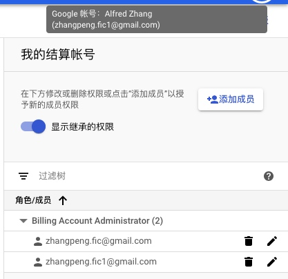

建立google VM
1，创建VPS选最低的配置
2，打开防火墙，配置ip0.0.0.0/0
3，vpc网络->外部IP地址 设置类型静态
4，修改root密码
1 | su do |
5，防火墙开启端口，准备root登录
1 | sudo su |
6，修改ssh设置，准备root登录
1 | vim /etc/ssh/sshd_config |
7，finalshell 连接入VPS
搭建VPS
1，设置系统时间
1 | date -R #查看系统时间 |
2，安装wget
1 | yum -y install wget |
3，加速
1 | wget --no-check-certificate https://github.com/teddysun/across/raw/master/bbr.sh |
4，安装BT面板
1 | yum install -y wget && wget -O install.sh https://download.bt.cn/install/install_6.0.sh && sh install.sh |
5，去DNS解析域名 (变换).alfredzhang.com
二级变换域名。目的是保证安装证书成功（解决证书失效每次都是新证书，详情看acme配置）
6，安装网盘网站
网站->添加站点(数据库和FTP不创建)->删除根目录下文件-> 上传veno-file-manager-v3.4.8 -> 解压找到vfm下所有文件覆盖到根目录下 -> 重启nginx -> 进入网盘 密码（admin:password）
7，安装ssl证书
网站->站点设置->ssl->let’s encrypt-> 强制HTTPS
8 安装V2ary
1 | wget -N --no-check-certificate https://raw.githubusercontent.com/FunctionClub/V2ray.Fun/master/install.sh && bash install.sh |
nginx配置：
网站->站点设置->配置文件里添加
1 | location /zp { |
服务器配置：
按照V2ray.fun服务器传输方式WS配置的json基础上添加
1 | {"wsSettings":"path":"/zp"} |
配置完成面板重启服务，就是重启V2ray
本地json配置：
1 | 所有域名指向honeycoin.club，检查users配置一致。 |
到此为止VPS配置完成！！！
域名申请和解析
1，域名申请
中国以外服务器建站域名是不需要备案的，既然用了国外vps建站那么肯定要配合国外免备案的域名，这样才真正的“free”。
那么国外哪个域名比较合适呢？推荐大家使用Namesilo，首年5.99美元，续费8.99美元，提供免费的隐私保护。GoDaddy虽然首年便宜，但是续费非常贵，不如选择Namesilo。
Namesilo官网：https://www.namesilo.com
选择了自己喜欢的域名后（Search -> Register Checked Domains），
使用优惠码：flyzysaving 可以优惠1美元
强烈建议选择.com或者.net的域名，虽然贵一些，但是这才是主流域名，一些如xyz，win结尾的域名，玩玩可以，认真建站不推荐。
2，域名解析
namesilo除了提供免费的隐私保护外，也提供免费的域名解析服务，可以直接将域名放在namesilo解析。登陆Namesilo后，选择Manage My Domains，找到你刚才买的域名，点击Manage DNS for the domain（蓝色的球）进去配置一下。
如果要解CDN加速点击 This domain is currently user customer DNS (数据库图标)进去替换下CDN服务商的服务器地址。
Trojan使用一键脚本安装,原始方式已经弃用
archives/250
1 | curl -O https://raw.githubusercontent.com/atrandys/trojan/master/trojan_centos7.sh && chmod +x trojan_centos7.sh && ./trojan_centos7.sh |
Trojan已安装完成，请使用以下链接下载trojan客户端，此客户端已配置好所有参数
1下载后在文件夹里运行start.bat(win),start.command(macos)
2用mellew代理工具配置实现一个分流
v2ray和trojan共存
1，安装好 curl、wget
1 | yum -y install wget ##ContOS Yum 安装 wget |
2，bbrplus加速脚本
1 | cd /usr/src && wget -N --no-check-certificate "https://raw.githubusercontent.com/chiakge/Linux-NetSpeed/master/tcp.sh" && chmod +x tcp.sh && ./tcp.sh |
3，v2ray一键安装脚本
1 | wget -N --no-check-certificate -q -O install.sh "https://raw.githubusercontent.com/wulabing/V2Ray_ws-tls_bash_onekey/master/install.sh" && chmod +x install.sh && bash install.sh |
安装v2ray脚本的v2ray+ws+tls后最后得到以下信息:
1 | [OK] SSL 证书生成成功 |
去mellow配置好直到可以访问google
4，trojan官方一键脚本
1 | sudo bash -c "$(curl -fsSL https://raw.githubusercontent.com/trojan-gfw/trojan-quickstart/master/trojan-quickstart.sh)" |
安装trojan脚本后：
修改/usr/local/etc/trojan/config.json配置
1 | "local_port": 8080, |
5，启动服务
1 | systemctl start trojan |
去trojan-qt5 配置端口和密码直到访问到google
6，安装BT面板并修复v2ray的nginx和宝塔面板的nginx的冲突
安装BT面板脚本
1 | yum install -y wget && wget -O install.sh https://download.bt.cn/install/install_6.0.sh && sh install.sh |
/etc/nginx/conf/nginx.conf 中增加：
1 | include /www/server/panel/vhost/nginx/gnode.alfredzhang.tk.conf; |
/www/server/panel/vhost/nginx/gnode.alfredzhang.tk.conf 中删除：
1 | enable-php-56.conf |
注意重启方法在宝塔面板修改配置保存后，在SSH终端重启nginx
1 | systemctl restart nginx |
acme证书
1，生成V2Ray证书的实例：
1 | curl https://get.acme.sh | sh #安装 acme.sh |
2，深入acme用法
中文说明
推荐原文DNS_API自动申请
3，Certbot对比acme
Certbot
certbot配置视频
acme阿里自动申请
google切换结算账户
条件：预备新账号，新账号填写美国合法地址，并添加招行信用卡。
1，在新结算账户上加入旧VPS的账户

2，在旧VPS的账户上会出现多个结算账户
3，上面列表里的旧结算账号ID里找到taiwanVPS，点击操作(3个点样式的图标)转移到上面列表的新的结算账号ID里。
转移前：
zhangpeng.fic@gmail.com：
结算帐号 ID：016525-39C146-F862F1（旧）
项目1:encoded-breaker-258001
项目2:xx-net-260401
zhangpeng.fic1@gmail.com：
结算帐号 ID：018071-D92AF0-ED176C（新）
项目1:refreshing-oven-292923
转移完成：